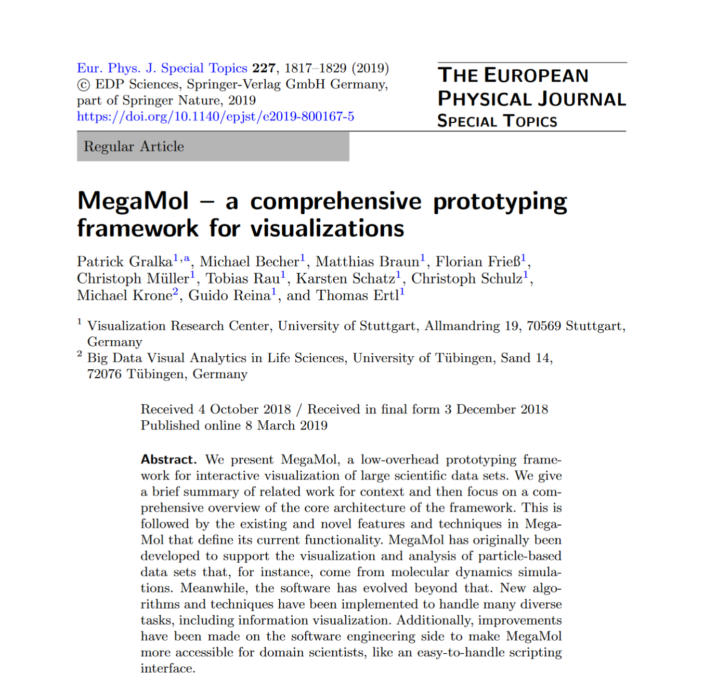

MegaMol - a comprehensive prototyping framework for visualizations

Authors. Patrick Gralka, Michael Becher, Matthias Braun, Florian Frieß,
Christoph Müller, Tobias Rau, Karsten Schatz, Christoph Schulz,
Michael Krone, Guido Reina, Thomas Ertl
Venue. The European Physical Journal (Special Topics) (2019)
Abstract. We present MegaMol, a low-overhead prototyping framework for interactive visualization of large scientific data sets. We give a brief summary of related work for context and then focus on a comprehensive overview of the core architecture of the framework. This is followed by the existing and novel features and techniques in MegaMol that define its current functionality. MegaMol has originally been developed to support the visualization and analysis of particle-based data sets that, for instance, come from molecular dynamics simulations. Meanwhile, the software has evolved beyond that. New algorithms and techniques have been implemented to handle many diverse tasks, including information visualization. Additionally, improvements have been made on the software engineering side to make MegaMol more accessible for domain scientists, like an easy-to-handle scripting interface.